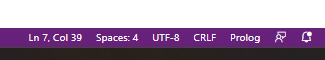
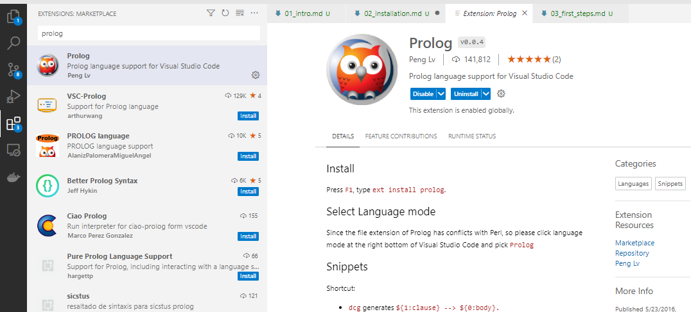
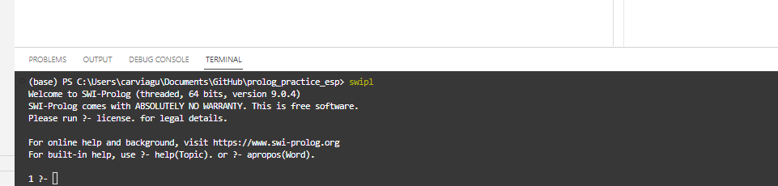

Sintaxis de PROLOG: Hechos y Reglas
Aprende a formular con PROLOG
Formulación de Hechos y Reglas para desarrollar bases de conocimiento en PROLOG
Objetivos de la sesión
- Entender la sintaxis de PROLOG para formular Hechos y Reglas.
- Saber traducir un Hecho o Premisa en lenguaje de PROLOG.
- Saber traducir una Regla de razonamiento en lenguaje de PROLOG.
- Saber como preguntar a PROLOG en base a su razonamiento cargado.
Razonando con PROLOG
Como hemos visto en la práctica anterior PROLOG funciona validando razonamientos.
En al sesión anterior fuimos capaces de probar comparativas aritméticas y de estructuras, pero todo limitado a los números. En esta sesión ya vamos a probar el verdadero potencial de PROLOG desarrollando argumentaciones más complejas.
Piensa por un momento en que necesitemos preguntar a PROLOG algo en específico…
Prueba este código en la terminal…
¿ama monica a chandler?.Parece que PROLOG no entiende que le estamos preguntando, vamos a probar usando ahora la sintaxis de PROLOG. Para ello usaremos una estructura, donde el predicado será ama y los términos serán las personas que queremos comprobar si se aman: monica y chandler. Prueba ahora…
ama(monica, chandler).Parece que PROLOG sigue sin entendernos… Esto es porque PROLOG no sabe lo que significa ama, ni como debe de interpretarlo. Si recuerdas, la progamación lógica requiere que previamente hallamos explicado a PROLOG como como se definen los conceptos y como tiene que responder.
Bases de Conocimiento
Para poder dotar a PROLOG de este conocimiento necesitamos crear una base de conocimiento y razonamiento, lo que denominaremos un programa en PROLOG. Las bases de conocimiento se componen de dos partes muy relevantes:
Los Hechos (Facts): son las ideas principales sobre las que basar el conocimiento, los pilares a partir de los cuales podemos comenzar nuestro razonamiento. Nuestra base de conocimiento.
Las Reglas (Rules): son las reglas de inferencia sobre las cuales a partir de la base de conocimiento podemos relacionar, argumentar y responder a las preguntas.
Es esencial que la base de conocimiento de nuestro programa sea acorde con el objetivo que queremos conseguir.
Desarrollo de Bases de Conocimiento: Friends
A partir del primer problema vamos a desarrollar la base de conocimiento que necesitamos para poder llevarlo a cabo. Para después probarla y cargarla en PROLOG.
Creando mi primera base de conocimiento
Las bases de conocimiento o programas de PROLOG se definen escribiendo el código en un fichero de PROLOG, los ficheros de PROLOG tienen la extensión .pl (Esto es algo similar a otros lenguajes de programación como Java donde los ficheros tienen la extensión .java)
Fuera de la terminal de PROLOG, ve a tu escritorio y crea una carpeta llamada pract_prolog, en esa carpeta crea un nuevo archivo llamado friends.pl (Puedes crear un archivo de texto y renombrarlo cambiando la extensión).
Si nunca has manejado las extensiones de los archivos, son las siglas que acompañan al nombre de los archivos indicando que tipo de archivo es. Por ejemplo un documento word suele ir acompañado por la extensión .docx: documento01.docx
Mostrar las extensiones. Es posible que no veas las extensiones de los archivos en tu ordenador, en Windows suelen estar ocultas por defecto. Para mostrarlas ve al explorador de archivos y en la pestaña Vista tendrás la opción de activarlas marcando la casilla de Mostrar Extensiones.
Una vez creado ya puedes abrir el fichero para editarlo, como vamos a editar código lo ideal sería utilizar un editor de código. En la prácticas puedes usar el que consideres más opoturno, pero si no sabes cual usar puedes abrir el archivo con Visual Studio Code.
Pasa el ratón por encima dale a click derecho y seleccionar Abrir con, busca entre los programas disponibles Visual Studio Code, verás que tiene un icono azul.
Visual Studio Code es un editor de código totalmente gratuito de miscrosoft (a diferencia de Visual Studio Community que es un entorno más avanzado pero que requiere de licencia).
Con este editor podrás programar en cualquier lenguaje de programación. En nuestro caso vamos a usar Prolog, revisa siempre que Visual ha seleccionado el lenguaje correcto en la barra inferior.
Cuando abres un archivo de código, Visual Studio identifica el lenguaje de programación mediante la extensión. En el caso de un .pl existen varios lenguajes de programación con que usan esta extensión. Verifica que Visual Studio está identificando correctamente la extensión en el lado derecho de la barra inferior de Visual. Deberá de poner Prolog, si pone otro lenguaje como PERL deberás de cambiarlo seleccionando el correcto.

Para cambiar el lenguaje selecciona el nombre del lenguaje que aparece, un listado aparecerá donde puedes buscar el lenguaje que desees usar.
También puedes usar la extensión de Prolog disponible para adquirir en la workshop de Visual Studio Code.
Ve al anexo para más información de uso de Visual Studio Code con PROLOG.
Facts
Primero necesitamos definir los hechos, estos serán la base esencial del conocimiento que tiene PROLOG, las verdades universales que usará para fundamentar sus respuestas.
Los hechos son estructuras que vienen expresadas como…
nombre_predicado(nombre_1, ..., nombre_n).Donde asignaremos un nombre del predicado y luego nombres de los individuos o varaibles que intervienen en esa verdad.
Para nuestro ejemplo el primer hecho que establecimos fue que Mónica ama a Chandler, esto se expresa como
ama(monica, chandler).Ahora a ese hecho incorporar dos nuevos hechos…
- Chandler ama a Mónica
- Joey ama a Rachel
Rules
Una vez tenemos nuestros hechos necesitamos dar a PROLOG unas reglas básicas para razonamiento.
Las primera de las reglas que vamos a establecer es “Dos personas salen si se aman mutuamente”.
Podemos representar esta regla en lenguaje de primer orden como como… \(\forall x \forall y (ama(x,y) \land ama(y,x) \to sale(x,y))\)
Nos referimos a todos los inviduos por lo que usamos dos cuantificadores universales, y dos predicados:
- el primero que ya hemos creado en el bloque de hechos
ama(x,y). X ama a Y. - el segundo que es que estamos definiendo
sale(x,y)que es la consecuencia de que dos personas se amen.
Para poder codificarlo en PROLOG podemos hacerlo de la siguiente forma:
sale(X,Y):- ama(X,Y), ama(Y,X).Fijaos que no necesitamos expresar cuantificadores, y que además hemos invertido la formula de primer orden.
Estamos expresando que sale(x,y) es el resultado de que dos personas se amen. A la hora de representarlo:
- el condicional \(\to\) se expresa con
:- - la conjunción \(\land\) se expresa con
, - la disyunción \(\lor\) se expresaría con
;
Por otro lado en este caso hacemos uso de variables (X, Y) y no de estructuras como en los hechos. Esto es ya que ahora estamos definiendo reglas, PROLOG entiende que esas variables tendran un valor que definirá el usuario y el lo aplicará a la regla usando los hechos.
Ahora prueba definir una nueva regla: “Dos personas son amigos si almenos uno de ellos ama a el otro.”
El programa friends.pl
Cuando termines deberas de tener ya un programa completo de PROLOG definido en tu archivo friends.pl. El programa debería de quedar como sigue:
% Friends program
% Facts
ama(monica, chandler).
ama(chandler, monica).
ama(joey, rachel).
% Rules
sale(X,Y):- ama(X,Y), ama(Y,X).
amigos(X,Y):- ama(X,Y); ama(Y,X).Para la parte de hechos, hemos añadido que tanto Mónica como Chandler se aman mutuamente y que además Joey ama a Rachel. Después de cada hecho hay que añadir el . final de los comandos de PROLOG.
Y en las reglas hemos definido la segunda regla como \(\forall x \forall y (ama(x,y) \lor ama(y,x) \to amigos(x,y))\) en lenguaje PROLOG.
Es muy importante seguir el orden: primero los Hechos y segundo las Reglas. Esto pues las reglas se fundamentan en los hechos, pero además podemos enunciar reglas basadas en otras reglas, en este segundo caso deben de seguir el orden de dependencia.
IMPORTANTE! Guarda el archivo antes de cerrarlo.
Cargando el programa en PROLOG
Una vez tienes tu programa de PROLOG terminado debemos de cargarlo en la base de conocimiento de PROLOG para que podamos hacerle preguntas al respecto.
Para esta parte es recomendable que, desde la consola, cambies de directorio a la carpeta que has creado en el apartado anterior donde está el archivo friends.pl. Recuerda que puedes usar el comando cd(). para moverte en la terminal.
Una vez estes en la carpeta donde se encuentra tu programa basta con ejecutar el comando ['nombre_archivo.pl'].En nuestro caso
?- ['friends.pl'].Una vez hecho esto PROLOG cargará en su memoria todos los hechos y reglas enunciados. Si más adelante cambiamos algo del código, bastará con volverlo a cargar.
Preguntando a PROLOG
Ahora que ya tienes cargada la base de conocimiento friends, puedes preguntar a PROLOG.
Prueba la siguientes preguntas:
- ¿Ama Mónica a Chandler?
- ¿Ama Phoebe a Chandler?
- ¿Sale Mónica con Chandler?
- ¿Sale Chandler con Mónica?
- ¿Sale Rachel con Joey?
- ¿Son Mónica y Chandler amigos?
- ¿Son Gunter y Chandler amigos?
¿Qué te devuelve en cada caso? Recuerda que debes de usar la sintaxis que has diseñado para Prolog. Por ejemplo, la primera pregunta sería ama(monica,chandler).
Por otro lado puedes hacer preguntas más genéricas y PROLOG intentará deducir la respuesta a partir de las reglas y la base de conocimiento. Por ejemplo, ¿a quién ama Mónica?
Basta con escribir ama(monica,X)., de esta forma PROLOG nos dirá que valor puede tomar X.
Intenta responder a las siguientes preguntas:
- ¿Con quién sale Chandler?
- ¿Con quién sale Rachel?
- ¿De quién es amigo Joey?
Ahora prueba a escribir salen(X,Y). o salen(X,X).. ¿Qué pasa?
Trazas y depuración en PROLOG
Como puedes observar Prolog te devuelve directamente la respuesta a tu pregunta. Pero muchas veces podemos necesitar entender como está razonando Prolog.
Prolog ya está creado para razonar usando la lógica, nosotros solo establecemos las reglas que deben de seguirse y las premisas de conocimiento. Para saber si el razonamiento creado es correcto podemos querer estudiar paso a paso que argumentos sigue Prolog en la generación de su respuesta.
Para ello podemos activar la depuración (debugging), esta nos mostrará los pasos que se han seguido para dar repuesta.
Escribe el siguiente comando en la terminal:
?- trace.Ahora se habrá activado la función de depuración y Prolog devolverá la traza seguida para determinar la respuesta. Una vez ejecutada la pregunta, sigue presionando enter cada vez para que Prolog devuelva una a uno a uno los pasos. Prueba las preguntas anteriores y analiza que traza devuelve.
Para salir del modo depuración escibre el comando notrace. y luego nodebug., volverá la terminal al funcionamiento original.
Ejercicio Práctico
Crea un programa de PROLOG que sea capaz de responder a preguntas sobre el menú de un restaurante:
- Un plato es un segundo si es carne o pescado.
- Una combinación de 3 platos es un menú, si está formada por un primero, un segundo y un postre.
Los hechos que conforman este programa son:
- La ensalada y la sopa son primeros.
- El pollo es un plato de carne.
- El rape y la lubina es un plato de rape.
- Las natillas y el flan son postres.
Crea el fichero restaurante.pl y escribe tu programa de PROLOG, después puedes probarlo preguntando:
- ¿El rape es un primer plato?
- ¿Existe el menu compuesto por ensalada, sopa y natillas?
Anexos
Trabajando con Visual Studio Code
Una propuesta para las prácticas será utilizar Visual Studio Code, este entorno es totalmente customizable permitiendo trabajar con múltiples lenguajes de programación e incorporando diversas extensiones que permiten adaptarlo a la tarea de programación que deseemos.
Una vez abierto ve a la tienda de extensiones, donde deberás de buscar PROLOG e instalarlo. Esto permitirá que Visual Studio pueda leer y ayudarte a escribir mejor código de PROLOG, también coloreará el código para mejor visualización.

Una de las ventajas de Visual Studio es que podemos trabajar con SWI-PROLOG sin necesidad de abrir la terminal externa del programa. Visual Studio nos permite abrir terminales en el propio entorno y trabajar desde ahí. Para ello debes de ir Terminal > New Terminal en las opciones superiores de Visual Studio Code. Se te abrirá una terminal en la parte inferior del entorno. Esta terminal no es la misma que la de PROLOG, sino la terminal del sistema (CMD, PowerShell, o el Shell)
Para acceder a PROLOG, si todo ha sido instalando correctamente, basta con escribir swipl y dar a enter. Ahora se activará dentro de la terminal PROLOG y verás algo similar a la terminal externa. Ahora ya puedes trabajar con prolog.

De esta forma podrás a la vez que editar un programa de PROLOG ejecutarlo y ver sus resultados en la misma ventana.